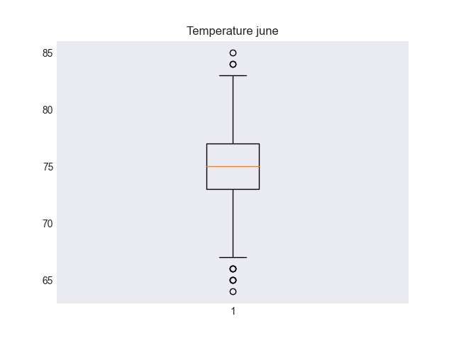
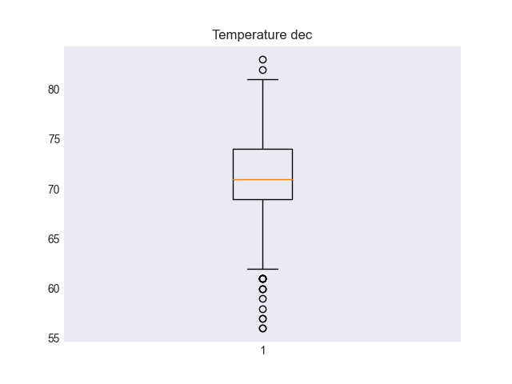

Challenge
Table of Contents
1. Weather Analysis
1.1. Overview of the analysis
We managed to get a good understanding of our data by filtering it and summarizing it, but we would like to get another look at specific dates in order to provide more solutions for our client.
That is why we went into the database once more and fetched summaries of Temperatures from June and December.
1.2. Results
We achieved the following results:
- We put together the boilerplate code for the basis of any sql query from python we could need.
- We made functions that abstract specific steps from the data filtering and organization for later use.
- We got the summaries that the client wanted.
1.2.1. Result: Boilerplate Base
One of the most useful stages in the project was stablishing a base for all our future Python-SQL code. Where we can set our classes and sessions to deal with whatever the client asks for.
from sqlalchemy.ext.automap import automap_base from sqlalchemy.orm import Session from sqlalchemy import create_engine, func import pandas as pd engine = create_engine("sqlite:///hawaii.sqlite") Base = automap_base() Base.prepare(engine, reflect=True) # Database specific Measurement = Base.classes.measurement Station = Base.classes.station session = Session(engine) for col in Measurement.__table__.columns: print(col.key)
id station date prcp tobs
1.2.2. Result: Functional Filter
We were able to use the func.strftime function from sqlalchemy to deal with dates, then wrap the process in a function we can use for all the different queries we want.
def get_temperature_by_date(date: str, frmt: str, name: str) -> pd.DataFrame: """Get all temperature values filtered by date. Args: date (str): Date, day, month, etc. frmt (str): Format, %d, %m, etc name (str): Date name, for df column. Returns: pd.DataFrame: Results as Dataframe, from list of single values (not tuples). """ return pd.DataFrame( [ i[0] for i in ( session .query(Measurement.tobs) .filter(func.strftime(frmt, Measurement.date) == date) .all() ) ], columns=[f'Temps {name}'] ) print(get_temperature_by_date)
<function get_temperature_by_date at 0x11ca8cc20>
1.2.3. Result: Data Description
Now that we have our function we can use it to get the summaries we need.
june = get_temperature_by_date("06", "%m", "June") print(june.describe())
| Temps June |
|---|
| count 1700.000000 |
| mean 74.944118 |
| std 3.257417 |
| min 64.000000 |
| 25% 73.000000 |
| 50% 75.000000 |
| 75% 77.000000 |
And the result from December.
december = get_temperature_by_date("12", "%m", "December") print(december.describe())
| Temps December |
|---|
| count 1517.000000 |
| mean 71.041529 |
| std 3.745920 |
| min 56.000000 |
| 25% 69.000000 |
| 50% 71.000000 |
| 75% 74.000000 |
We can also make a few plots out of the results.
import matplotlib.pyplot as plt plt.style.use("seaborn-dark") files = ["temp_june.png", "temp_dec.png"] dfs = [june, december] for f, df in zip(files, dfs): plt.boxplot(df) plt.title(f"Temperature {f.replace('temp_', '').replace('.png', '')}") plt.savefig(f) plt.close() print(files)


1.3. Summary
Once we did the initial work of sorting out how to access, filter and transform the data, we made long strides without much effort in the following iterations of our process.
This shows how a programming language like Python goes so well together with SQL as it allows us to automate repetitive tasks that may vary only a little.
Splitting the work into designing our process and the process itself really helps on focusing in the data whenever we are working with it instead of having to deal with the “how” we are dealing with it.